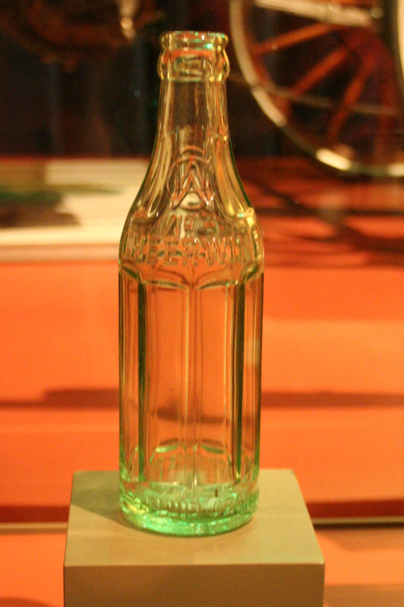

a dishCheerwine
also: Cheerwine soda · Retro Cheerwine · Original 1917 Formula · Diet Cheerwine
One word, capital C. It is a soda with no wine in it; the name is for the burgundy colour and the cheer.

A cherry-flavoured soft drink — burgundy-red, sweet, with a strong black-cherry note and more carbonation than most sodas — made in Salisbury, Rowan County, North Carolina by the Carolina Beverage Corporation since 1917, and run by founder L.D. Peeler's family throughout. On a Piedmont barbecue counter it is the soda beside the tea: Lexington Barbecue lists Cheerwine and Diet Cheerwine with the Cokes, and the Barbecue Center sells it by the 10-, 16- and 32-ounce cup. It is bottled in glass with cane sugar as Retro or 'Original 1917 Formula' Cheerwine, comes as ice cream and sherbet in Food Lion, and has had its own festival in Salisbury each year since its centennial in 2017.
First seen. 1917, Salisbury, North Carolina; registered as a trademark in 1926 (Wikipedia)
The company's own line, as Wikipedia quotes it: 'it made sense to name a burgundy-red, bubbly, cherry concoction — Cheerwine.' Cited · wp-cheerwine
The story Cited · wp-cheerwine
Two accounts of 1917 survive, and they agree on the man and the town. Wikipedia's: when the Maysville Syrup Company of Maysville, Kentucky went bankrupt that year, L. D. Peeler, Hughston Kirby, Kurt Weinmann and other investors bought its assets, moved them to North Carolina as the Carolina Syrup Company, and the same year bought a cherry-soda recipe from a St. Louis flavor salesman and sold it as Cheerwine. The company's own: Peeler made it during the wartime sugar shortage from a wild-cherry flavour a St. Louis salesman brought him, and named it for its burgundy-red colour and cheery disposition. The trademark was registered in 1926. Peeler's son Clifford took over in 1931 and kept the company profitable through the Depression; the plant moved to its present Salisbury site in July 1967; Clifford's grandsons Cliff and Mark Ritchie joined in the late 1970s, and Cliff Ritchie has headed the parent company since 1992 by Wikipedia's account, since 2007 by the company's — which makes it, by its own claim, the oldest soft-drink company still run by its founding family. The rest is reach: Pepsi distributors bottling it outside the Carolinas from 2005, a Krispy Kreme Cheerwine doughnut in July 2010, a New York Times piece on 'The Expanding Cult of Cheerwine' in 2011 with a plan the same year to be nationwide by the centennial, and a festival in downtown Salisbury from 2017 that drew over 100,000 people in 2025 and, the Salisbury Post says, $5.9 million to Rowan County.
How it is done Cited · wp-cheerwine
Carbonated water, high-fructose corn syrup (cane sugar in the glass-bottle Retro line), caramel colour, phosphoric acid, natural and artificial flavours, caffeine, citric acid, sodium benzoate and Red 40, as the label read in 2021; the flavour is cherry with a black-cherry edge and the fizz is high. It is sold in glass bottles, cans, 12-packs and two-litre bottles, and as a fountain drink at some restaurants and convenience stores, Cook Out and Bojangles among them. At the barbecue counter it comes in a cup over ice with the tray; at home it goes into a Cheerwine cake — a commercial one has been baked in Salisbury since 2008 — and into a float, and with Captain Morgan rum it is a 'Captain Cheerwine'.
Today Cited · web-lexbbq-menu
Lexington Barbecue: Cheerwine or Diet Cheerwine $2.90 cash, $3.00 card (September 2026); the Barbecue Center: 10 oz $2.50, 16 oz $2.90, 32 oz $3.75. Sold from Maryland to Florida and in specialty-soda shops beyond. The 2026 Cheerwine Festival was Saturday, May 16, in downtown Salisbury; Cheerwine Zero Sugar arrived in 2021 and a Cheerwine Ale with NoDa Brewing in 2023.
Facts
| course | drink |
|---|---|
| styles | Lexington-style barbecue |
| region | The North Carolina Piedmont, North Carolina, The Carolinas, The American South |
| links | Cheerwine — Wikipedia · Cheerwine — About (company history) · Cheerwine Festival — History |
| confidence | high · updated 2026-09-15 |
Recipes you may use
Public-domain cookbooks are printed here in full, spelling and all. Where a recipe is still in copyright, the page gives the ingredients — a list of what goes in is a fact — and links to the rest.
Cheerwine — the label
- carbonated water
- high fructose corn syrup
- caramel color
- phosphoric acid
- natural and artificial flavors
- caffeine
- citric acid
- sodium benzoate (to protect flavor)
- Red 40
Ingredients only, in label order, as the label read in July 2021; the cherry formula the company bought from a St. Louis flavour salesman in 1917 has never been published. Retro Cheerwine is made with cane sugar in place of the corn syrup.
Cherry Shrub
The household ancestor of a bottled cherry drink: juice drawn from the fruit, sweetened, bottled and mixed with water to drink. A morello is a sour cherry; the brandy is the keeping agent and can be left out, in which case the syrup must be kept cold.
Cherry Shrub
A pound of sugar to a quart of juice, and the cherry stones boiled separately for the almond note that a black-cherry flavouring still carries. 'Fine, mixed with iced waters' is what a cherry soft drink does.
Its kin
Who points back
Pictures
{kind=link}

{kind=link}
Sources
- Cheerwine — Wikipedia · link
- About — company history timeline · link
- Cheerwine Festival History · link
- Cheerwine Festival pops back into Salisbury on May 16: 2025 Festival drew 100,000+ guests and generated $5.9 million for Rowan County (2026-01-18) · link
- Lexington Barbecue — Menu · link
- Barbecue Center — online menu (prices as posted) · link
- Texas Pete — Wikipedia · link
- The Virginia House-Wife, or Methodical Cook — Mrs. Mary Randolph, 1824 · link
- The Kentucky Housewife, Containing Nearly Thirteen Hundred Full Receipts — Mrs. Lettice Bryan, 1839 · link
Where it came from: Cited a source we name · Harvested pulled from an open dataset · Tradition what the tradition says, hedged · Inference this project's reasoning · Field somebody stood there. This record as JSON.